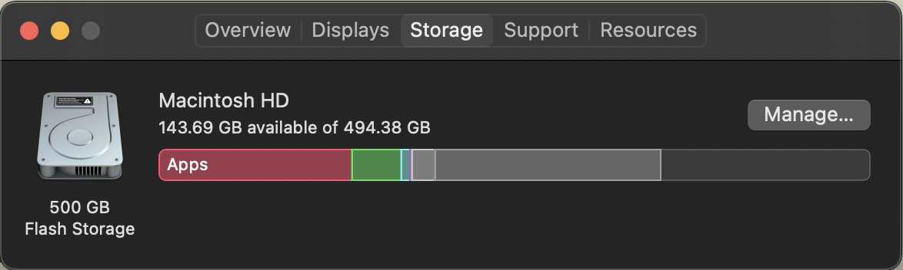
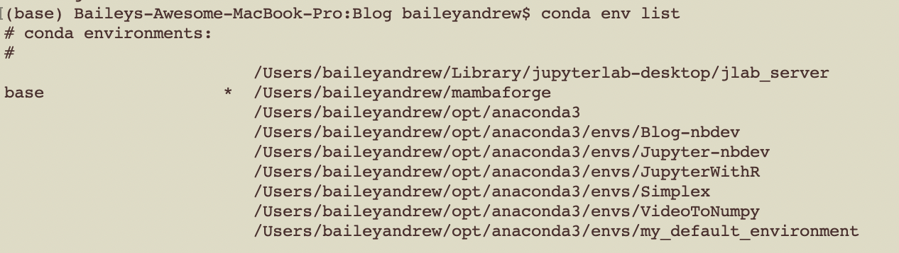
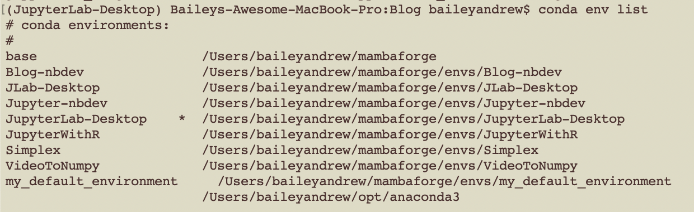
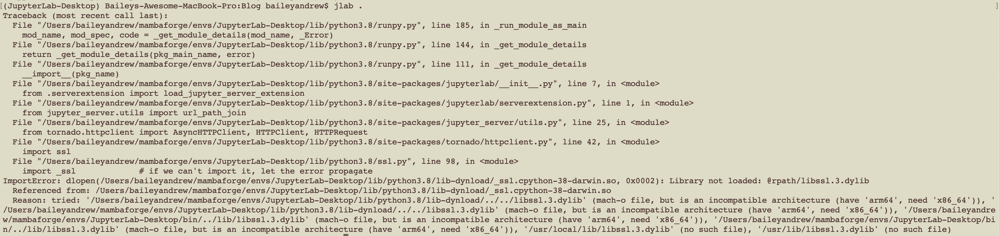
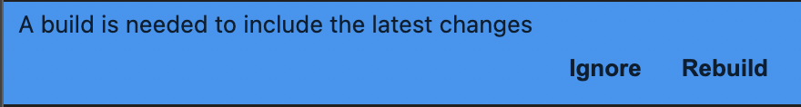
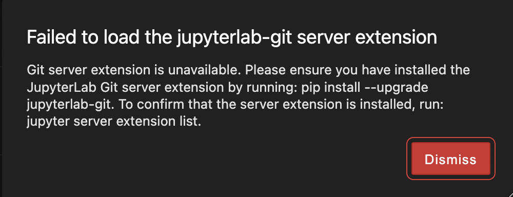
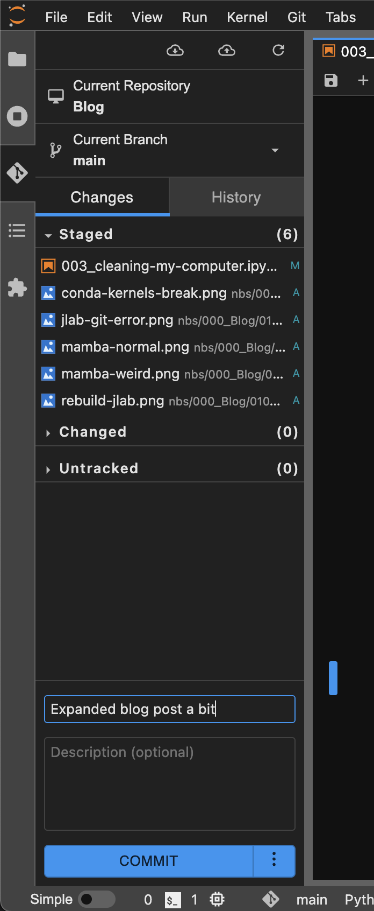

Cleaning My Computer

I just spent the last hour cleaning my computer - good places to look are the downloads folder, your conda environments, and your Steam games. The remaining files are either an assortment of accumulated documents and images over the years, and a lot of internal stuff that I’m too scared to delete.
Mamba
mamba is basically conda but implemented in C++, so it is apparently much faster. This is nice because I’ve been feeling like conda is pretty slow…1
I first reset my conda base environment by following the steps from here. This probably isn’t necessary but you shouldn’t be installing anything to base yet 12-year-old me had no idea. My base environment has accumulated a lot of rubbish over the years, and it seemed to be preventing me from installing stuff!
False Start: Installing via terminal
I first tried installing it from the terminal
conda install conda-forge::mamba=1.2.0But it didn’t work when I tried to use it:
Baileys-Awesome-MacBook-Pro:Blog baileyandrew$ mamba
Traceback (most recent call last):
File "/Users/baileyandrew/opt/anaconda3/condabin/mamba", line 7, in <module>
from mamba.mamba import main
File "/Users/baileyandrew/opt/anaconda3/lib/python3.9/site-packages/mamba/mamba.py", line 49, in <module>
import libmambapy as api
File "/Users/baileyandrew/opt/anaconda3/lib/python3.9/site-packages/libmambapy/__init__.py", line 7, in <module>
raise e
File "/Users/baileyandrew/opt/anaconda3/lib/python3.9/site-packages/libmambapy/__init__.py", line 4, in <module>
from libmambapy.bindings import * # noqa: F401,F403
ImportError: dlopen(/Users/baileyandrew/opt/anaconda3/lib/python3.9/site-packages/libmambapy/bindings.cpython-39-darwin.so, 0x0002): Library not loaded: @rpath/libarchive.13.dylib
Referenced from: /Users/baileyandrew/opt/anaconda3/lib/libmamba.2.0.0.dylib
Reason: tried: '/Users/baileyandrew/opt/anaconda3/lib/libarchive.13.dylib' (no such file), '/Users/baileyandrew/opt/anaconda3/lib/python3.9/site-packages/libmambapy/../../../libarchive.13.dylib' (no such file), '/Users/baileyandrew/opt/anaconda3/lib/python3.9/site-packages/libmambapy/../../../libarchive.13.dylib' (no such file), '/Users/baileyandrew/opt/anaconda3/bin/../lib/libarchive.13.dylib' (no such file), '/Users/baileyandrew/opt/anaconda3/bin/../lib/libarchive.13.dylib' (no such file), '/usr/local/lib/libarchive.13.dylib' (no such file), '/usr/lib/libarchive.13.dylib' (no such file)I downloaded mamba from here. After doing that, it worked!
Well, sort of, all my old environments lost their names:

To fix this, I ran the following code to rename them:
conda rename --prefix /Users/baileyandrew/opt/anaconda3/envs/Blog-nbdev Blog-nbdevSo now my environments look normal:

JupyterLab Desktop
I wanted to untether myself from a browser, so I installed JupyterLab Desktop by following their instructions on GitHub.
When you first start it, it will ask you for a default environment for JupyterLab to reside; use one you’ve already created2. This is because otherwise, if you’re using an M1 Mac, it’s gonna get confused if you try to download more packages (specifically, after downloading nb_conda_kernels it “sidegraded” my openssl to be for an arm64 computer - which is correct, but JupyterLab Desktop was perfectly happy pretending my computer was something else and it got very angry at me when I tried to tell it otherwise). This is only a problem for the auto-created environment, which is why you should just set the default environment to one you’re already using.

Extensions
I never really messed with JupyterLab extensions before, but I figured I’d give them a try.
First, I had to install nodejs:
mamba install conda-forge::nodejs=18.12.1I installed the following from the extensions tab (looks like a puzzle piece on left hand side of JupyterLab):
@jupyterlab/git- Couldn’t just install from extensions list, also required:
mamba install conda-forge::jupyterlab-git=0.41.0
@jupyterlab/latexjupyterlab-system-monitor- Couldn’t just install from extensions list, also required:
mamba install conda-forge::nbresuse=0.4.0- Also, even though I wasn’t told to do this, it seems I needed to run the following:
mamba install conda-forge::jupyterlab-system-monitor=0.8.0
jupyterlab/fasta-extensionjupyterlab-drawio- I don’t know if this
mambainstall is needed, just did it to cover my bases. mamba install conda-forge::jupyterlab-drawio=0.9.0- Fun fact: you don’t need to restart, just rebuild, for this to work!
- I don’t know if this
I didn’t test the fasta-extension or latex estensions and based on their track record I am inclined to assume they need external installations.
After install, for each one of these you’ll get the following pop-up:

You can click rebuild but to be honest it didn’t seem to do anything, I’d keep getting this error:

Which was all fixed just by restarting JupyterLab Desktop, and now I have this nice convenient Git GUI!

And also I can make diagrams real quick!
They don’t show up in the editor but do in nbdev_preview. Annoyingly drawio only exports to svg (does not show up) or pdf if you go through the hassle of fake-printing it; and even then it doesn’t look great. So the utility of this tool is limited.